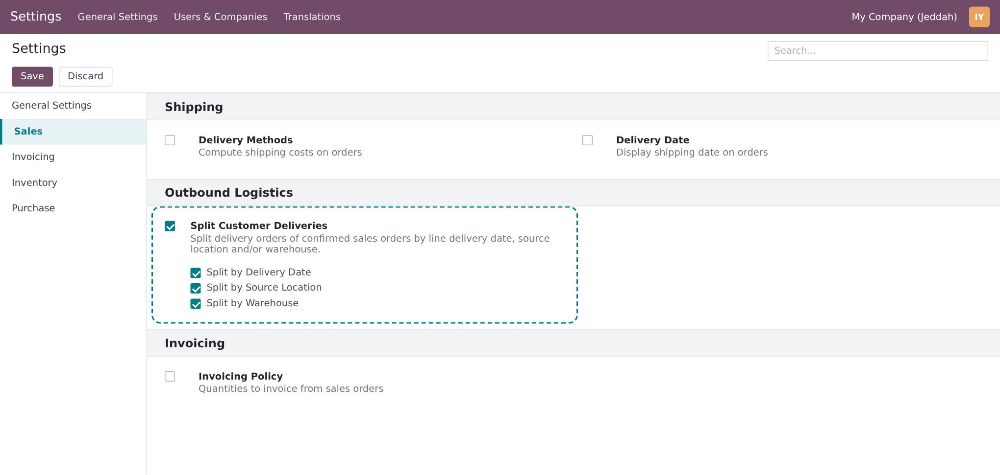
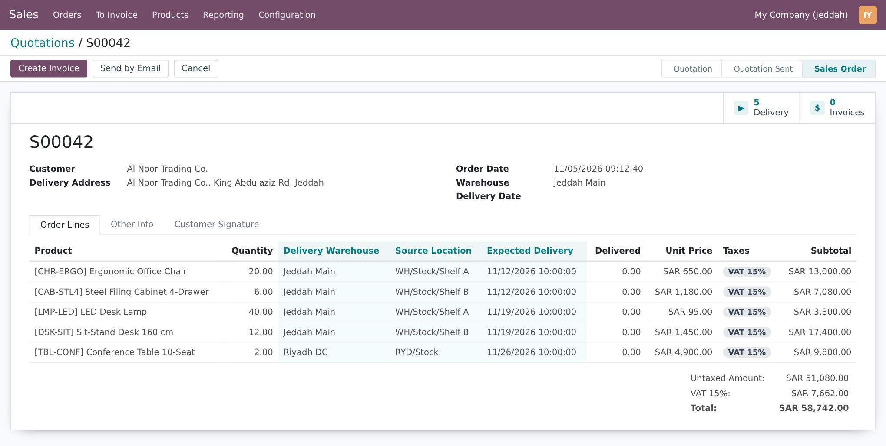
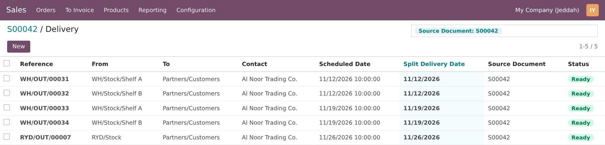
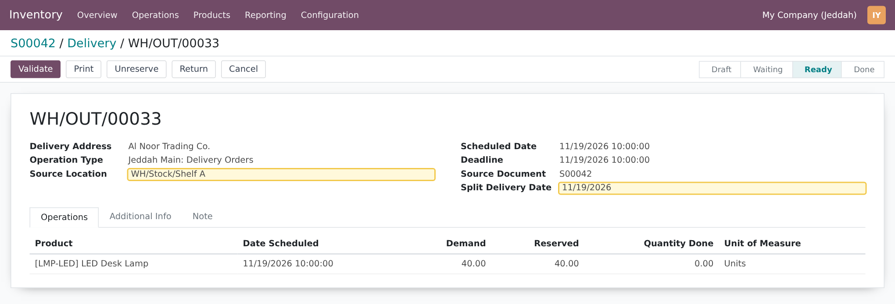
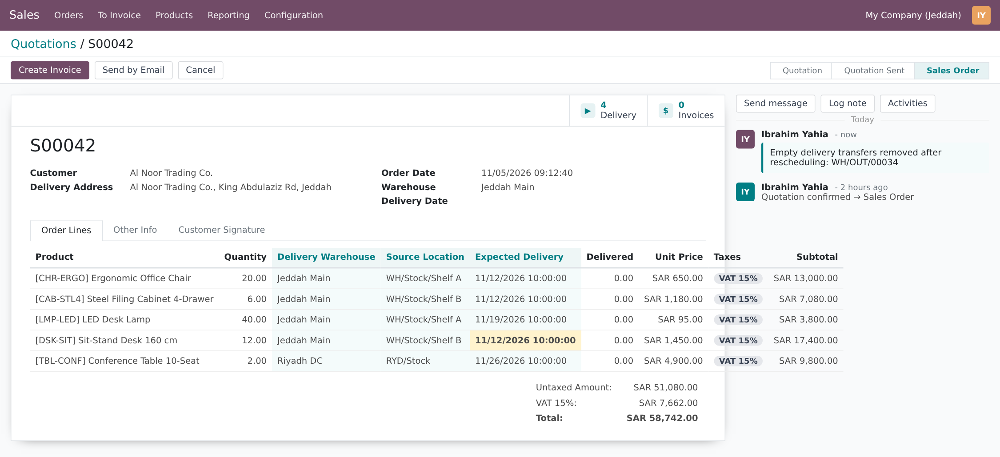
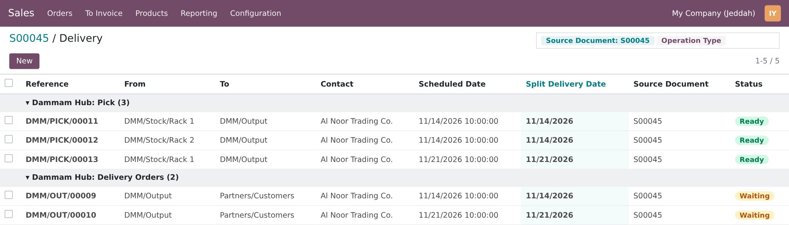
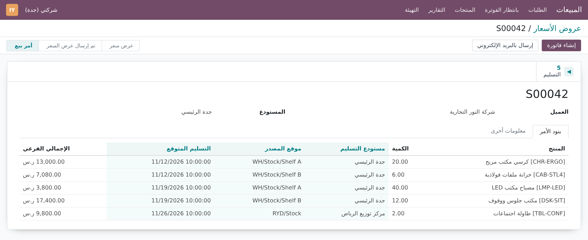

Give every sales order line its own expected delivery date, source location and warehouse. On confirmation Odoo creates one delivery order per day, location and warehouse, and keeps them in sync when plans change.
Customers rarely take everything on one day from one shelf. Standard Odoo 16 still plans the whole sales order as a single delivery.
Four steps, all inside the standard sales and inventory flow.
Screenshots use one demo order, S00042 for Al Noor Trading Co.: five office-furniture lines over three dates, two shelves of the Jeddah Main warehouse and the Riyadh DC warehouse.
Sales › Configuration › Settings › Outbound Logistics. Tick Split Customer Deliveries, then tick Split by Delivery Date, Split by Source Location and/or Split by Warehouse. Settings are stored per company. Ticking the main option with nothing selected pre-selects the date criterion. With it unticked, Odoo behaves exactly as standard.

The sales counterpart of the purchase line Expected Arrival. It takes the order’s Delivery Date and can be changed per line; changing the order Delivery Date again pushes the new date to all lines. Left empty, Odoo’s standard rule applies (order date + product lead time), so dates never go stale between quotation and confirmation. Line dates also drive the order’s Expected Date: earliest line for As soon as possible, latest for When all products are ready. The Delivery Warehouse and Source Location columns default to the order warehouse and its stock location. Each column only appears when its criterion is enabled.

On confirmation, S00042 becomes five delivery orders instead of one: two days × two shelves in Jeddah, plus Riyadh. Each delivery picks from its own Source Location, carries the line date as Deadline and shows its Split Delivery Date. Lines planned on the same local day (salesperson time zone) share a delivery.


| Delivery | Day | From | Lines |
|---|---|---|---|
| WH/OUT/00031 | 11/12/2026 | WH/Stock/Shelf A | Ergonomic Office Chair |
| WH/OUT/00032 | 11/12/2026 | WH/Stock/Shelf B | Steel Filing Cabinet |
| WH/OUT/00033 | 11/19/2026 | WH/Stock/Shelf A | LED Desk Lamp |
| WH/OUT/00034 | 11/19/2026 | WH/Stock/Shelf B | Sit-Stand Desk |
| RYD/OUT/00007 | 11/26/2026 | RYD/Stock | Conference Table |
Here the customer wants the Sit-Stand Desk a week earlier. Changing its Expected Delivery to 11/12 moves its pending move into WH/OUT/00032 (same day, same shelf), updates the deadline, and deletes the now-empty WH/OUT/00034. The order counts 4 Delivery and the chatter logs what was removed. The same happens when you change a line’s Source Location (reservation is released and redone on the new shelf) or the order’s Delivery Date.

In a multi-step warehouse (here Dammam Hub, Pick + Ship), the split keys travel down the whole chain. The Pick step is split by day and by rack, because that is where the source location matters. The Delivery Orders step leaves from the common Output location and is split by day only.

Every label, help text, setting and message is translated in ar_001. Views use standard Odoo layout only, so they mirror correctly in right-to-left languages.

How the module behaves in the situations that usually break delivery planning.
No new groups or models: standard Sales and Inventory access applies.
| Who | Can |
|---|---|
| Sales / Administrator | Turn the feature and its criteria on or off in Sales settings |
| Sales / User | Set dates, source locations and warehouses on their order lines; rescheduling updates deliveries with system rights, the same way confirming an order does |
| Inventory / User | See Split Delivery Date on transfers and group by it |
| Multi-company | Each company keeps its own settings; lines only accept warehouses and locations of the order’s company |
| Odoo version | 16.0, Community and Enterprise |
| Depends on | sale_stock |
| Python dependency | None |
| Settings | Sales › Configuration › Settings › Outbound Logistics |
| New fields | Order line: expected_delivery_date, delivery_warehouse_id, delivery_location_id · Transfer and move: sale_split_date · Move: sale_split_location_id |
| Extended models | res.company, res.config.settings, sale.order, sale.order.line, stock.move, stock.picking, stock.rule (no new models) |
| Automated tests | 18: line date behaviour, split by date / location / warehouse alone and combined, pick + ship route, rescheduling and empty-delivery removal, quantity increase, processed moves, guards, non-sales transfers |
| Translations | Arabic (ar_001) and a .pot template |
| License | LGPL-3 |
Questions, a demo, or an adaptation to your own process? Get in touch.
✉ ibrahim.yahiah@gmail.com LinkedIn: Ibrahim YahiaAuthor: Ibrahim Yahia · License: LGPL-3